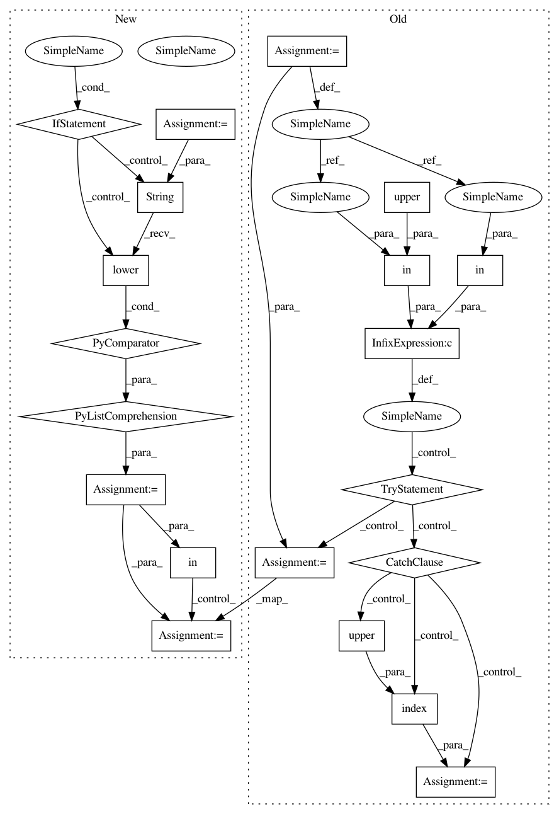

375cb8a49e24589a564f3d27ad004c1923b739da,nltk/sentiment/vader.py,SentimentIntensityAnalyzer,_only_if_check,#SentimentIntensityAnalyzer#Any#Any#,475
Before Change
def _only_if_check(self, words_and_emoticons, sentiments):
check = "only"
if check in words_and_emoticons or check.upper() in words_and_emoticons:
try:
i = words_and_emoticons.index(check)
except ValueError:
i = words_and_emoticons.index(check.upper())
if len(words_and_emoticons)>i+1 and "if" == words_and_emoticons[i+1].lower():
for si, sentiment in enumerate(sentiments):
if si < i:
sentiments.pop(si)
After Change
return sentiments
def _only_if_check(self, words_and_emoticons, sentiments):
words_and_emoticons_lower = [str(w).lower() for w in words_and_emoticons]
check = "only"
if check in words_and_emoticons_lower:
i = words_and_emoticons_lower.index(check)
if len(words_and_emoticons)>i+1 and "if" == words_and_emoticons_lower[i+1]:
for si, sentiment in enumerate(sentiments):
if si < i:
sentiments.pop(si)
In pattern: SUPERPATTERN
Frequency: 3
Non-data size: 20
Instances
Project Name: nltk/nltk
Commit Name: 375cb8a49e24589a564f3d27ad004c1923b739da
Time: 2019-05-22
Author: itsmemala@users.noreply.github.com
File Name: nltk/sentiment/vader.py
Class Name: SentimentIntensityAnalyzer
Method Name: _only_if_check
Project Name: nltk/nltk
Commit Name: 375cb8a49e24589a564f3d27ad004c1923b739da
Time: 2019-05-22
Author: itsmemala@users.noreply.github.com
File Name: nltk/sentiment/vader.py
Class Name: SentimentIntensityAnalyzer
Method Name: _but_check
Project Name: nltk/nltk
Commit Name: 375cb8a49e24589a564f3d27ad004c1923b739da
Time: 2019-05-22
Author: itsmemala@users.noreply.github.com
File Name: nltk/sentiment/vader.py
Class Name: SentimentIntensityAnalyzer
Method Name: _only_if_check
Project Name: nltk/nltk
Commit Name: 375cb8a49e24589a564f3d27ad004c1923b739da
Time: 2019-05-22
Author: itsmemala@users.noreply.github.com
File Name: nltk/sentiment/vader.py
Class Name: SentimentIntensityAnalyzer
Method Name: _in_spite_of_check